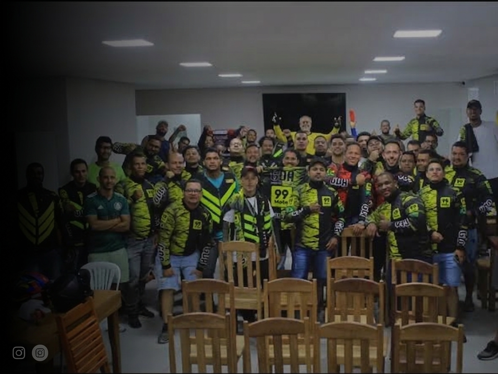

SOS GDA 24H
Solicite a sua emergência a qualquer hora e em qualquer lugar. Sempre tem um GDA por perto.

Portal oficial da Equipe GDA: Recrutamento, Loja oficial, Encontros, Informações e muito mais — em um só lugar
Uma comunidade de pilotos que se apoia na pista, de dia e de noite.
Solicite a sua emergência a qualquer hora e em qualquer lugar. Sempre tem um GDA por perto.
Cada membro recebe seu número oficial da equipe ao ser aprovado. Esse número é a sua identificação no GDA.
Grupo exclusivo com passageiros de confiança, corridas com preço justo e livre de taxas abusivas.
Comunidade com mais de 400 pilotos por toda a cidade. Você não está só. União e força.
Os pedidos da 3ª remessa foram finalizados em 22/10.
Não ficou com a sua? Entre na lista de interesse e seja o primeiro a saber quando abrir a próxima remessa.
(Exclusivo para membros que possuem Número do Piloto).
Em agosto de 2024, em Porto Seguro – BA, surgiu a Equipe GDA. Criada do sonho de termos uma comunidade unida em torno de um propósito: apoiar uns aos outros.
Com profissionalismo e compromisso, nos tornamos a maior equipe de profissionais por app do interior da Bahia.
Só estamos no começo. Junte-se à Família GDA.
“Quem dorme perde”
“GDA toda vida”
Nasceram entre brincadeiras e resenhas — e viraram nossa marca registrada, com alegria, por onde passamos.